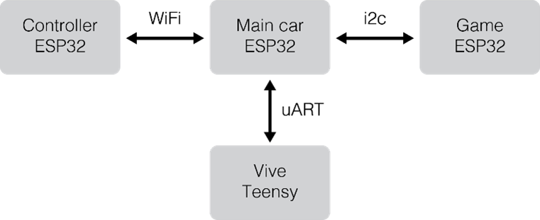

Building a Semiautonomous Vechicle
This project was done with a team of three students for the mechatronics course MEAM 510. Our task: build a small car and remote from scratch using laser-cut and 3D printed parts, control the car wirelessly over Wi-Fi via Arduino integration, and enable autonomous driving. Compete against other cars.
Mechanical Design
The goal of the design was to be compact and minimalistic while maintaining functionality. The body of the robot took the form of a firetruck,
manufactured out of red, eighth-inch acrylic, and held together with press-fits. The body housed 4 LiPos, two motors, up to four PCBs, and a whisker switch.
The servo and ladder rested atop the robot. Two wheels attached directly to the motors in the front of the car, and two caster wheels attached in the rear.
The model is shown in the figures below.
Electrical Design
The system contained four microprocessors and three communication protocols.
The main car ESP32 controlled driving and served as a hub for signals from all other boards.
A Teensy microprocessor took in data via a photodiode from an HTC Vive set above the playing field.
This data was transmitted to the main ESP32 with a uART protocol and used for autonomous driving.
The ESP32 on the remote took in joystick signals and transmitted to the main ESP32 via WiFi.
Finally, the teaching staff used another ESP32 to transmit gameplay information such as car health via i2c during the final competition.
This architecture is laid out in the figure below.

These are the primary circuit schematics of our car. On the left is the driving circuit which took wireless inputs from our remote and translated those signals to motor movements. On the right is the photodiode circuit which was used to derive position data based on proximity to the HTC Vive.
Software Design
We had three primary software objectives: process incoming signals, drive the car, and implement autonomy.
The first two were nontrivial but straightforward. As ESP32 boards can be programmed with Arduino code, our task primarily came down to using Arduino’s
communication protocol libraries and processing signals to send to the wheels. The Teensy board did not have Arduino capabilities, so we needed to
implement uART transmission in C.
At its heart, our autonomous algorithm was a proportional-derivative controller. After first choosing an optimal path to follow (based on its playfield location and orientation), the bot homed in and began minutely adjusting wheel speeds to turn onto the chosen path.
Competition Performance